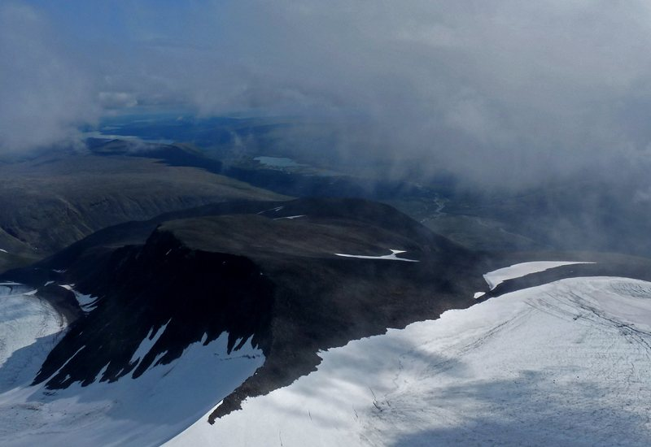

Film
Kebnekaise på video
Klippen från dagarna på fjället och kortfilmen om resan. Filmerna är bevarade från den ursprungliga sidan och öppnas i ny flik.

Kortfilm
Kebnekaise The Movie
En sammanfattning av hela äventyret – från packningen hemma till toppen och hemresan. Filmen ligger hos Vimeo och öppnas i en ny flik.
Se filmen hos VimeoKlipp från resan
Sex dagar, sex filmer
Klippen ligger kvar på OneDrive. Beroende på inställningar kan du behöva logga in för att spela upp dem.